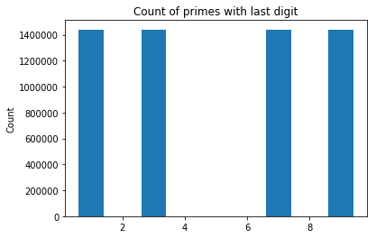

Getting Primes
Before starting, I developed an algorithm along with the help of Bruno Astrolino E Silva1 to print out prime numbers to a .txt file. I decided to use a slight variation to the Sieve of Eratosthenes algorithm which works similarly to the .gif2 below. The Sieve of Eratosthenes works by initializing every number up to \(\sqrt{n}\) to True then iterates through each number and adding it to a list of primes if the value is True and then setting all integers divisible by the number to False. I also modified this algorithm by only iterating through odd numbers and start looking for integers that are \(n^2\) larger than the current index. These tweaks optimize the algorithm only slightly but save valuable resources and time when calculating large numbers of prime numbers.
def primes(n):
sieve = [True] * n
for i in range(3,int(n**0.5)+1,2):
if sieve[i]:
sieve[i*i::2*i]=[False]*((n-i*i-1)//(2*i)+1)
return [2] + [i for i in range(3,n,2) if sieve[i]]
num_primes = int(input("How many primes: "))
p = primes(num_primes)
formatted = "".join(str(p))
file = open("primes.txt", "a")
file.write(formatted)
file.close()
After I calculate all primes under \(10^8\), I then write them to a file to access them later for processing. I chose to calculate primes only up to 100,000,000 merely because any factor larger would require a substantial amount more computing power and the findings would be minimal.
Findings
The primary motivation for this project is to find interesting patterns and to learn about the theory of prime numbers. I developed most of this project in Python, and you can find the source code here. I developed the source code in such a way that someone can easily pick up my work and continue further analysis. Making my code open-source will help the prime number community further find patterns in primes and potential other patterns in numbers.
The first pattern I started looking for are the last digits of each prime number. For example, for 23 the last digit would be 3, for 31,489 the last digit would be 9, and for 104,597 the last digit would be 7. Unfortunately, it seems as if there is a uniform distribution between prime numbers having a 1, 3, 7, and 9 as their last digit all while none of these digits have more than a 1% deviation from another.
If there were some pattern within the occurrences of last digits, we could tie in some algorithm to find the probability that some significant number is a prime based on its last digit. But, from what we can see, it is undoubtedly apparent to find the number of prime numbers ending with one of the numbers in the set of [1, 3, 7, 9] to be ~\(\frac{n}{4}\), where n is the count of numbers.

The next pattern I tried to find is the percentage of numbers that are prime under n. From general intuition, we all know that the higher the number, the higher the probability that that number will be divisible by some other number. However, determining this increase in likelihood per number is what we are looking to find. From the graph below, I found the percentage of numbers that are prime below certain thresholds (\(10^1\), \(10^2\), ..., \(10^7\), \(10^8\)).
At first, there is roughly a 56% increase in the number of primes between \(10^1\) to \(10^2\), but that increase slowly decreases, immediately lowering from a 56% increase to a 7.52% increase. But the decrease slowly tapers off, decreasing from 7.52% to a 3.03% decrease between \(10^7\) to \(10^8\). This relationships seems to show a logarithmic pattern as you increase n, the difference between the number of primes seems to approach 0. In fact, there is a research study3 that proved that \(\frac{\pi(x)}{x}\)~\(\frac{1}{log(x)}\) as \(x\rightarrow\infty\). Further they show the proof below on the right.
| $$x$$ |
$$\pi(x)$$ |
$$\frac{\pi(x)}{x}$$ |
$$\frac{\frac{\pi(x_n)}{x_n}}{\frac{\pi(x_{n-1})}{x_{n-1}}}$$ |
$$\Delta\frac{\frac{\pi(x_n)}{x_n}}{\frac{\pi(x_{n-1})}{x_{n-1}}}$$ |
| \(10^1\) |
\(4\) |
\(0.4\) |
\(0.4\) |
40.000% |
| \(10^2\) |
\(25\) |
\(0.25\) |
\(0.625\) |
56.250% |
| \(10^3\) |
\(168\) |
\(0.168\) |
\(0.672\) |
7.5200% |
| \(10^4\) |
\(1229\) |
\(0.1229\) |
\(0.731547619\) |
8.8612% |
| \(10^5\) |
\(9592\) |
\(0.09592\) |
\(0.7804719284\) |
6.6879% |
| \(10^6\) |
\(78498\) |
\(0.078498\) |
\(0.8183694746\) |
4.8557% |
| \(10^7\) |
\(664579\) |
\(0.066458\) |
\(0.8414535325\) |
2.8207% |
| \(10^8\) |
\(5761455\) |
\(0.057615\) |
\(0.8669385176\) |
3.0287% |
\(log(n)\) ~ \(log(\frac{p_n}{log(p_n)})\) = \(log(p_n)-log(log(p_n))\), as \(n\rightarrow \infty\)
$$\lim_{m\to \infty} \frac{log(n)}{log(p_n)}=\lim_{m\to \infty}\frac{log(p_n)-log(log(p_n))}{log(p_n)}$$
$$=\lim_{m\to \infty}1-\frac{log(log(p_n))}{log(p_n)}=\lim_{m\to \infty}1-\frac{\frac{1}{log(p_m)}\cdot\frac{1}{p_n}}{\frac{1}{p_n}}$$
$$=\lim_{m\to \infty}1-\frac{1}{log(p_n)}=1$$
Therefore, from above, there is a rough approximation for:
\(p_n \sim n\cdot log(n),\) as \(n \rightarrow \infty\)
In conclusion, prime numbers obtain a unique property that seemingly follows an almost predictable pattern while yet remaining extraordinarily complex to calculate. We determined that the last digit of prime numbers do not correlate with determining the probability of a prime number. We also discovered that the number of prime numbers found seems to decrease at a logarithmic rate, a rate of \(log(p_n)\). Hopefully, though, with the open-source code I developed, people will pick up my project and continue working and finding further data.
References
[1] Bruno Astrolino E Silva (https://stackoverflow.com/users/350331/robert-william-hanks). Fastest way to list all primes below N. Stack Overflow. URL: https://stackoverflow.com/questions/2068372/fastest-way-to-list-all-primes-below-n (version: 2019-01-03)
[2] SKopp. (n.d.). In Wikipedia. Retrieved April 16, 2019, from https://commons.wikimedia.org/wiki/File:Animation_Sieve_of_Eratosth.gif
[3] Barthel, Jim, et al. “Visualising the Distribution of Primes.” Math.uni.lu, University of Luxembourg, 2015, math.uni.lu/eml/projects/reports/prime-distribution.pdf.